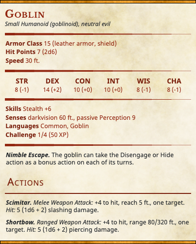

The Cragmaw tribe of goblins has established a hideout from which it can easily harass and plunder traffic moving along the Triboar Trail or the path to Phandalin. The Cragmaw tribe is so named because each member of the tribe sharpens its teeth so they appear fierce and jagged.
The leader of the Cragmaw bandits lairing here is a bugbear named Klarg, who has orders from the chief of the Cragmaws to plunder any poorly defended caravans or travelers that come this way. A few days ago, a messenger from Cragmaw Castle brought new instructions: Waylay the dwarf Gundren Rockseeker and anyone traveling with him.
The Cragmaw cave slopes steeply upward. The entrance is at the foot of a good-sized hill, and the caves and passages are inside the hill itself.
Ceilings. Most of the caves and passages have steeply sloping ceilings that create stalactite-covered vaults rising 20 to 30 feet above the floor.
Light. Areas 1 and 2 are outside. The rest of the complex is dark unless stated otherwise. The boxed text for those locations assumes that the characters have darkvision or a light source.
Rubble. Areas of crumbling rock and gravel are difficult terrain (see “Difficult Terrain” in the rulebook).
Sound. The sound of water in the cave muffles noises to any creatures that aren’t listening carefully. Creatures can make a DC 15 Wisdom (Perception) check to attempt to hear activity in nearby chambers.
Stalagmites. These upthrust spires of rock can provide cover (see “Cover” in the rulebook).
Stream. The stream that flows through the complex is only 2 feet deep, cold, and slow moving, allowing creatures to easily wade through it.
If the characters capture or charm any of the goblins here, the goblins can be persuaded to divulge some useful information:

The trail from the goblin ambush site leads to the entrance of the Cragmaw hideout.
Following the goblins’ trail, you come across a large cave in a hillside five miles from the scene of the ambush. A shallow stream flows out of the cave mouth, which is screened by dense briar thickets. A narrow dry path leads into the cave on the right-hand side of the stream.
The thicket in area 2 is impenetrable from the west side of the stream.
The goblins in area 2 are supposed to be keeping watch on this area, but they are not paying attention. (Goblins can be lazy that way.) However, if the characters make a lot of noise here— for example, loudly arguing about what to do next, setting up a camp, cutting down brush, and so on— the goblins in area 2 notice and attack them through the thicket, which provides the goblins with three-quarters cover (see the rulebook for rules on cover).
When the characters cross to the east side of the stream, they can see around the screening thickets to area 2. This is a goblin guard post, though the goblins here are bored and inattentive.
On the east side of the stream flowing from the cave mouth, a small area in the briar thickets has been hollowed out to form a lookout post or blind. Wooden planks flatten out the briars and provide room for guards to lie hidden and watch the area — including a pair of goblins lurking there right now!
Two goblins are stationed here. If the goblins notice intruders in area 1, they open fire with their bows, shooting through the thickets and probably catching the characters by surprise. If the goblins don’t notice the adventurers in area 1, they spot them when they splash across the stream, and neither side is surprised.
Characters moving carefully or scouting ahead might be able to surprise the goblin lookouts. Have each character who moves ahead make a Dexterity (Stealth) check contested by the goblins’ passive Wisdom (Perception) score to avoid being surprised. See the rulebook for more information on ability check contests.
Thickets. The thickets around the clearing are difficult terrain, but they aren’t dangerous— just annoying. They provide half cover to creatures attacking through them. (See “Difficult Terrain” and “Cover” in the rulebook for more information.)